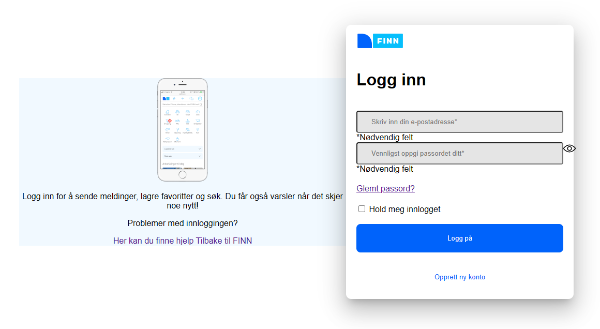
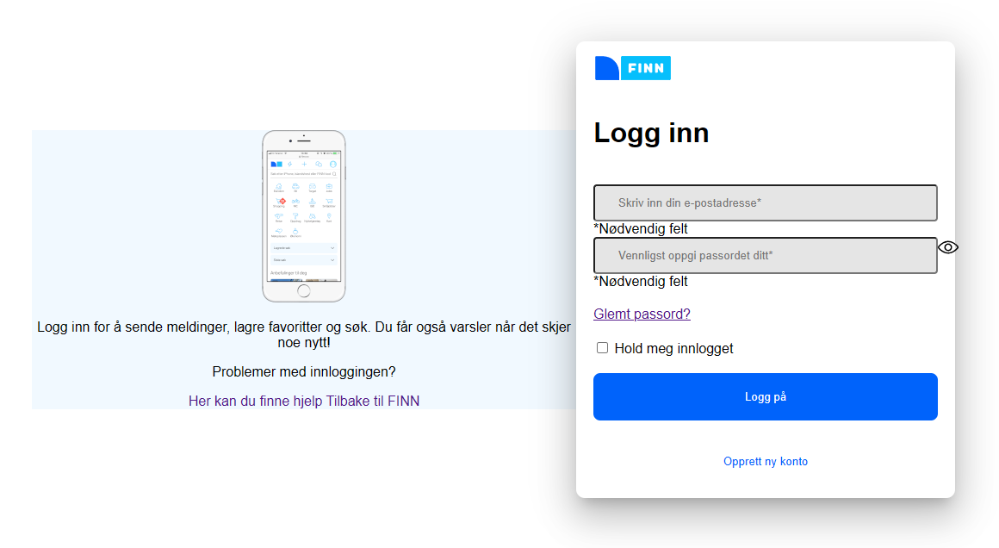
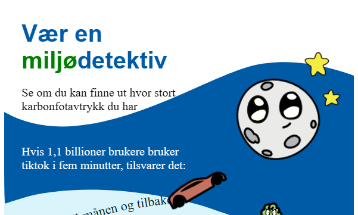

BEM and Design systems
Present the original individual assignment and include reflections on learning outcomes, advantages and disadvantages of BEM and design systems, and how these concepts were applied in the assignment.

SVGs, SVG Drawing and Animations, and CSS Drawing and Animations
Present the original group assignment, crediting all group members. Include a link to the group version and the improved individual version.


Scroll- and Storytelling, Design Principles, Accessability and User Experience
Present the original group assignment, crediting all group members. Include a link to the group version and the improved individual version.